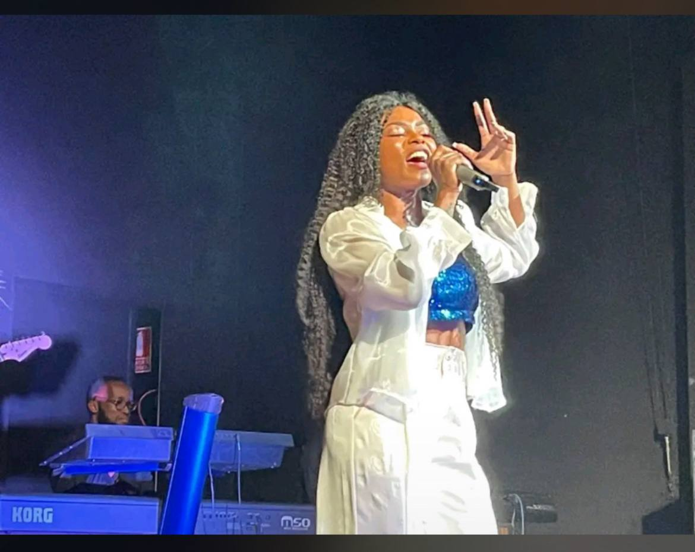

Galería



KINTA SOL comenzó su viaje artístico en Guinea Ecuatorial, inspirada por la riqueza cultural de su tierra. Kinta Sol se ha consolidado como una de las figuras más prometedoras y representativas del panorama musical de Guinea Ecuatorial, llevando la riqueza cultural de su país natal más allá de las fronteras africanas. Su carrera artística representa un puente entre las tradiciones musicales ecuatoguineanas y los sonidos contemporáneos del afro pop internacional.Su objetivo ambicioso es dar a conocer la riqueza cultural de Guinea Ecuatorial tanto dentro como fuera de las fronteras nacionales.Su compromiso con las raíces culturales es inquebrantable. El tambor tradicional, los ritmos ancestrales y la herencia musical ecuatoguineana permanecen como elementos centrales en su propuesta artística, creando una fusión única entre lo tradicional y lo contemporáneo. Para Kinta Sol, la educación es fundamental para el desarrollo de la juventud africana, especialmente para los artistas y, de manera particular, para las mujeres. Su filosofía educativa refleja una visión integral del desarrollo artístico: considera que los músicos, y especialmente las mujeres artistas, deben estar bien formadas para poder contribuir de manera más efectiva al panorama cultural. Esta perspectiva la ha convertido no solo en una artista, sino también en un modelo a seguir para las jóvenes generaciones africanas. Su filosofía educativa refleja una visión integral del desarrollo artístico: considera que los músicos, y especialmente las mujeres artistas, deben estar bien formadas para poder contribuir de manera más efectiva al panorama cultural. Esta perspectiva la ha convertido no solo en una artista, sino también en un modelo a seguir para las jóvenes generaciones africanas. .
Ha colaborado con artistas ecuatoguineanos como Jamin Dog Bo , en la cancion Bosques Verdes, con el rapero Adjoguening en su album Menchu,en el primer album de la cantante colaboro con el frances Medy Custos, fortaleciendo su presencia en la escena africana.
Su primer álbum, grabado en Francia, marcó un antes y un después en su carrera como artista independiente.El lanzamiento de su álbum en solitario "Rompe Cadenas" representó un hito en la carrera de Kinta Sol. El álbum también cuenta con la participación del artista internacional francés Medhy Custos en la canción "Toboye Ya Nke", demostrando la capacidad de Kinta Sol para crear puentes musicales entre diferentes culturas. El tambor tradicional, los ritmos ancestrales y la herencia musical ecuatoguineana permanecen como elementos centrales en su propuesta artística, creando una fusión única entre lo tradicional y lo contemporáneo.
Kinta Sol está lista para presentar su muy esperado segundo álbum. Este nuevo proyecto representa la madurez artística alcanzada durante sus años de estudios y promete llevar su propuesta musical a nuevas dimensiones creativas. Como adelanto de este próximo lanzamiento, la artista ya ha presentado dos temas que están generando gran expectación en las plataformas digitales. "Punto y Aparte" y "Don't Let Me Down" están resonando fuertemente en YouTube, El segundo álbum de Kinta Sol promete ser una aventura sonora que trasciende los límites tradicionales de género. creando un puente sonoro único entre África y España. Esta propuesta incluye la fusión de sonidos típicamente africanos con elementos de otras tradiciones musicales, demostrando la versatilidad y el crecimiento artístico de la cantante ecuatoguineana.En la actualidad, Kinta Sol se encuentra en un momento de gran expectación artística, con el resto de las canciones de su segundo álbum pendientes de lanzamiento.
Promueve valores culturales, identidad africana y empoderamiento juvenil a través del arte y la educación. KINTA SOL no es solo una artista: es una voz que inspira, una fuerza que transforma. Desde Guinea Ecuatorial, su trabajo se convierte en un puente entre tradición y modernidad, entre raíces africanas y horizontes globales.Su visión cultural se basa en la revalorización de la identidad africana, la promoción de los valores comunitarios, y la defensa de la diversidad como riqueza. A través de su música, su imagen y sus proyectos, KINTA SOL celebra lo auténtico, lo ancestral, lo femenino y lo joven.En el ámbito educativo, impulsa iniciativas que conectan el arte con el desarrollo personal. Cree en el poder del arte como herramienta de transformación social, como espacio de expresión libre, y como vehículo para el empoderamiento juvenil. Su experiencia como emprendedora y profesional le permite integrar creatividad, estrategia y formación en cada propuesta. Su mensaje es claro: el arte no solo entretiene, también educa, construye y libera.Su compromiso con la juventud africana es constante. A través de sus letras, sus presentaciones y su presencia digital, transmite esperanza, fuerza y autenticidad. KINTA SOL es una artista que canta, enseña y lidera con propósito.
Los primeros singles del segundo album de KINTA SOL ya están disponibles en plataformas de streaming, dos videoclips,actualmente Se está trabajando en el lanzamiento oficial de las fechas de lanzamiento.
Kinta Sol began her artistic journey in Equatorial Guinea, inspired by the cultural richness of her homeland. Kinta Sol has established herself as one of the most promising and representative figures in the Equatorial Guinean music scene, bringing the cultural richness of her native country beyond African borders. Her artistic career represents a bridge between Equatorial Guinean musical traditions and the contemporary sounds of international Afro-pop. Her ambitious goal is to promote the cultural richness of Equatorial Guinea both within and outside its national borders. Her commitment to its cultural roots is unwavering. The traditional drum, ancestral rhythms, and Equatorial Guinean musical heritage remain central elements in her artistic work, creating a unique fusion of the traditional and the contemporary. For Kinta Sol, education is fundamental to the development of African youth, especially for artists and, in particular, for women. Her educational philosophy reflects a holistic vision of artistic development: she believes that musicians, and especially women artists, must be well-educated in order to contribute more effectively to the cultural landscape. This perspective has made her not only an artist, but also a role model for younger African generations. Her educational philosophy reflects a holistic view of artistic development: she believes that musicians, and especially female artists, must be well-trained in order to contribute more effectively to the cultural landscape. This perspective has made her not only an artist, but also a role model for younger African generations.
She has collaborated with Equatorial Guinean artists such as Jamin Dog Bo, in the song Bosques Verdes, with the rapper Adjoguening in his album Menchu, in the singer's first album she collaborated with the French Medy Custos, strengthening her presence in the African scene.
Her debut album, recorded in France, marked a turning point in her career as an independent artist. The release of her solo album, "Rompe Cadenas," represented a milestone in Kinta Sol's career. The album also features French international artist Medhy Custos on the song "Toboye Ya Nke," demonstrating Kinta Sol's ability to create musical bridges between different cultures. The traditional drum, ancestral rhythms, and Equatorial Guinean musical heritage remain central elements in her artistic offering, creating a unique fusion of traditional and contemporary music.
She is currently working on her second musical project, blending Afro pop, flamenco, and contemporary sounds.Kinta Sol is ready to present her highly anticipated second album. This new project represents the artistic maturity achieved during her years of study and promises to take her musical approach to new creative dimensions. As a preview of this upcoming release, the artist has already presented two tracks that are generating great excitement on digital platforms. "Punto y Aparte" and "Don't Let Me Down" are resonating strongly on YouTube. Kinta Sol's second album promises to be a sonic adventure that transcends traditional genre boundaries, creating a unique sonic bridge between Africa and Spain. This proposal includes the fusion of typically African sounds with elements of other musical traditions, demonstrating the versatility and artistic growth of the Equatorial Guinean singer. Currently, Kinta Sol finds herself at a time of great artistic expectation, with the remaining songs on her second album pending release.
She promotes cultural values, African identity, and youth empowerment through art and education. KINTA SOL is not just an artist: she is an inspiring voice, a transformative force. From Equatorial Guinea, her work bridges the gap between tradition and modernity, between African roots and global horizons. Her cultural vision is based on the revaluation of African identity, the promotion of community values, and the defense of diversity as a treasure. Through her music, her image, and her projects, KINTA SOL celebrates authenticity, ancestry, femininity, and youth. In the educational field, she promotes initiatives that connect art with personal development. She believes in the power of art as a tool for social transformation, as a space for free expression, and as a vehicle for youth empowerment. Her experience as an entrepreneur and professional allows her to integrate creativity, strategy, and training into every project. Her message is clear: art not only entertains, it also educates, builds, and liberates. Her commitment to African youth is constant. Through her lyrics, her performances, and her digital presence, she conveys hope, strength, and authenticity. KINTA SOL is an artist who sings, teaches, and leads with purpose.
The first singles by KINTA SOL are now available on streaming platforms, two music videos, and the official release dates are currently being worked on.
WhatsApp: +240 222 978 322
href=" href=" href=" href="